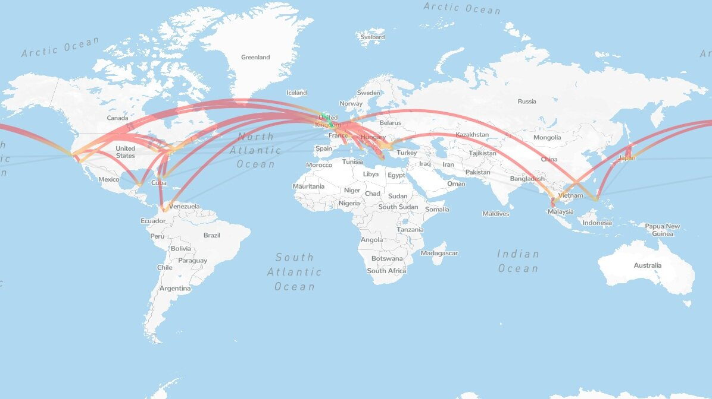

Travels
My wife Lily and I are now settled in London, but in 2019 and 2020 we were digital nomads travelling the world while we waited for a UK visa for Lily. Our adventures during that time are captured in this 2-min video montage and charted below courtesy of NomadList.
We published a photo essay on San Francisco while we were ‘sheltering in place’ there during coronavirus. If you can see the video above, it is time lapse footage of Shibuya Crossing. If not, it’s a long-exposure photo from Plitvice Lakes, Croatia. More of my photos and videos are available on Instagram.
